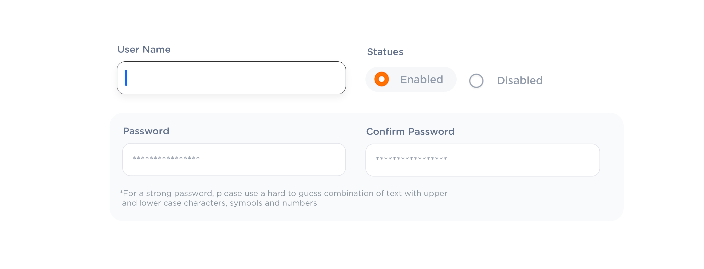
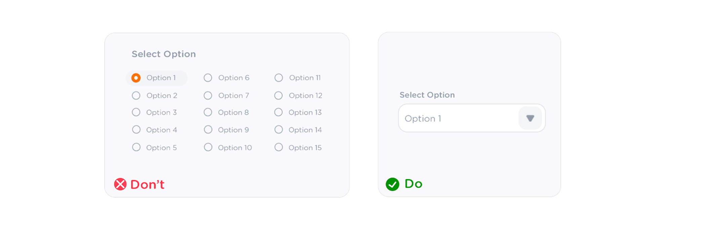

Design
Guide
OXD Introduction
Design Thinking
UX Standards
Visual Design
Grid & Layout
Navigations
Components
 UI Behaviours
UI Behaviours
 QA Standards
QA Standards
Buttons
Text-box
Check-box
Radio
Radio Pils
Switch
Search-box
Multi Select
Dropdown
Number Dropdown
Upload Inputs
Upload input box
Date picker
Time picker
Color picker
Labels
Help Lable
Status lable
Group Input
Group Overlay
Scroll-bar
Count Slider
Text-area
Comment-box
Paginations
Card loader
Divider
Tables & List View
Cards & Shapes
Modals & Popups
Advance Components
Charts
UX Guidelines
UX impacts your web form’s level of accessibility (which refers to how easily your forms can be completed and submitted by many types of people, of various backgrounds) and usability (which refers to how easily someone can accomplish their goal, which in this case means completing a form). Without great UX, you’ll not only have poor accessibility and usability but you’ll also lose out on conversions
Use visual constraints
Use visual constraints to not cause a subliminal spurious wish to type more than you need to. For instance, if there is only two characters must be typed into the ‘State’ field, no need to make it as long as, let’s say, ‘Address’ field.
Besides, different width of the fields serves as a good anchor for eyes to navigate faster than in a column with the fields of the same width.
Desktop-only: Make Form Keyboard-friendly

Users should be able to trigger and edit every field using only the keyboard. Power users, who tend to use keyboards heavily, should be able to navigatethe form using Tab and make necessary edits, all without lifting their fingers off the keyboard. You can find detailed requirements for keyboard interaction pattern in W3C’s Authoring Practices for Design Patterns.
Pre-fill/auto-detect as much as can.
Always help your respondent. If you already know some information about him, pre-fill those fields or even don’t show them at all.
For example.
• Most of the times you can easily detect a user’s country and the city by IP or geolocation.
Use Radio Button Rather Than Drop-downs
If Possible use radio buttons rather than drop-downs. Drop-down will require extra action (the user needs to tap on the drop-down element to see the options). The radio button on the other hand makes all options visible. so that users can easily compare them. (but do not use for more than 5 items or list of options)

If the Options or Items is more then 5 or 6 use dropdown instead of radio
If the Options or Items is more than 2 better two use in a left-aligned vertical stack, its always better eye comfort than the horizontal alignment radio buttons
The first field should be auto-selected.
the first field should be auto-selected when a form or modal opening, otherwise the user has to use the mouse to select the first field. it just obvious time wasting and not good for keyboard support
Do not use too many check-boxes
the first field should be auto-selected when a form or modal opening, otherwise the user has to use the mouse to select the first field. it just obvious time wasting and not good for keyboard support
Try to present vertically, with one choice per line, this rule works toggles and checkboxes. if you must use a horizontal layout with multiple options per line. make sure to space the button and label so that its abundantly clear witch choice goes with the label
If it is longer content. use the card view. otherwise, it will be harder to make choice for the user, the user will see ass all are in one paragraph by looking at it. make the clear separation that user can read easily to make the choice
Drop-downs should not be empty
drop-down when form opening, it should selected the default or first value from its options. It should not be empty. also we can use the smart default feature. but there will be cases the dropdown option can be optional. then you can leave it with a placeholder
Smart Default
By utilizing analytics and overall usage patterns, we can determine which option is selected most frequently from our dropdown.
If 80% of the users are selecting a specific option, then we can allow 80% of users to skip this step entirely by making that option the smart default.
Make the chack-box pre-checked when form open
If more than 75% of users are gonna check the Option. then make it auto-selected when form opening. because 75% of users no need to make an effort to check the option. its reduce the work user need to do
Name a button to explain what it does rather than to use a generic label

A good dialog box should makes each option as clear as possible. That’s why it’s so important to have a clear label for each option. An explicit label give users more confidence in selecting the correct action:
• Verb is better to describe the action than noun(such as "OK").
Action buttons should be right aligned

It is ideal to right-align the (terminating) action buttons within a modal or dialog and also placing the primary action to the right (If there is no permission for an action, action buttons should float to right).
In a list view most prominent action button should come right

Action button order should be as the most prominent action should come right.Therefore, in a list view action buttons should ordered primary to secondary,right-to-left(Eg: Delete, Download, Edit)
Circular profile pictures accentuate faces more than square ones.

Square isn’t the best shape to use because it makes it hard to visually process faces. Most faces are at the center of a profile picture. When looking at a face in a square profile picture, users will spend longer focusing on it. In circular profile pictures the less background area there is, the more users can easily focus on the face.
Use User-Friendly Error Messages
An error message should include two components as to what happened and how to fix it. Humorous error messages can relieve tension or frustrate the user more. It all depends on context.
Show password constraints upfront and update it in real time
Giving show/hide password option to the user is very good in UX. The user makes fewer mistakes while they can see what are they typing. State visible the password requirements and showing that there is room for improvements, will motivate people to create better passwords by showing and updating password constraints in real time.
Add a Password Strength Meter
The user can see the level of security in real time and with visual helpers (like colours: green, yellow, red).The benefit of visually representing the password strength is getting a secure password, instead of just complying with a system’s arbitrary command.